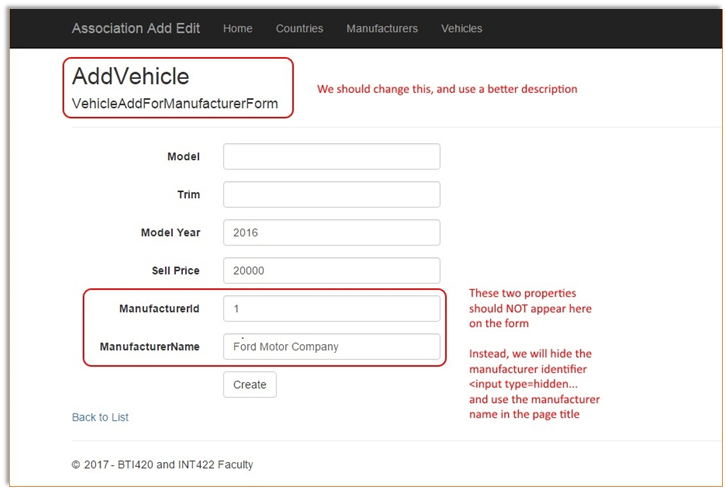
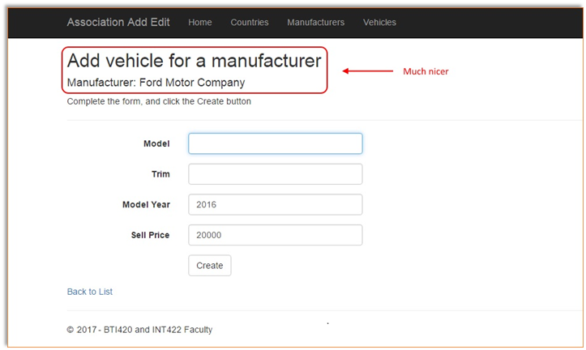
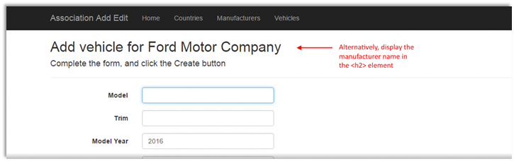

INT422 – Lecture 5-2
Working with associated (related) data in add or edit scenarios. Work on Assignment 5.
Code example
Associations Add and Edit
View model classes for this AssocAddEdit code example
In the code example, a class diagram was created (in the Controllers folder) to show the design of the view model classes. Open it and study it. Also, open and read its “readme” text file for a summary explanation of the design.
Here’s an image of the class diagram. Click to open it full size in a new tab/window
{kind=link}
Progress checkpoint
In the previous class/session, you learned about some design and coding features that will enable you to work with associated data. A brief list includes:
- Using a dedicated “…Form” view model class to package data for an HTML Form
- If the HTML Form needs an item-selection element, we use a SelectList object to package the items
Today, we will look at the “add new” and “edit existing” use cases, and learn how to design and code your web app to implement them. As you would expect, there are patterns to follow, and best practices to implement.
While you are reading the following sections, open and study the AssocAddEdit code example.
“Add new” for an object that has a required association
If you are implementing “add new” for an object that has a required association, you MUST have information about, or a reference to, the associated object.
This scenario is most common when you are adding an object that is dependent on another object for part of its existence. For example:
In the code example, a Vehicle MUST be associated with a Manufacturer (in other words, a Vehicle is dependent on a Manufacturer).
Therefore, when adding a new Vehicle, we must know, or have, information about the associated Manufacturer.
In the retail business, a Product MUST be associated with a Supplier.
Therefore, when adding a new Product, we must know, or have, information about the associated Supplier.
At the College, an Academic Program MUST be associated with a School (Faculty).
Therefore, when adding a new Academic Program, we must know, or have, information about the associated School (Faculty).
The implication –
ALWAYS add the to-one property for the
required association to
the “add new” view model class
When you have a to-one required association, ALWAYS add the property to the “add new” view model class.
The property type is int (which is the data type of the unique identifier).
The property name is <entity>Id (for example, ManufacturerId).
In other words, the VehicleAdd view model class will have this property:
[Range(1, Int32.MaxValue)]
public
int ManufacturerId { get; set; }
Citing another example, Manufacturer has a to-one required association with Country. A ManufacturerAdd view model class will have this property:
[Range(1,
Int32.MaxValue)]
public
int CountryId { get; set;
}
❝This is super important. Doing this will help you avoid design and coding errors.
Knowing or having information about the associated object
During the flow of the application, it is possible that the app will allow/enable the browser user to start with an empty context, and begin the process of adding a Vehicle. In that situation, the browser user must choose the Manufacturer from an item-selection element.
❝See the “Create New” feature on the list-of-vehicles page.
However, it is also possible that the context of the flow knows or has information about the associated object. In the code example, when working with the Manufacturer object, we know and have information about that Manufacturer. Therefore, when adding a new Vehicle for that Manufacturer, we do not have to ask the browser user for Manufacturer info.
❝See the “Add vehicle for this manufacturer” feature on the manufacturer details page.
How the nature of the association affects your interaction design
This section continues with the topic that was discussed in the previous section. It is a topic that requires some thought and reasoning.
When designing for the “add new” use case, the nature of the association affects the interaction design. Which of the following is better, and more correct?
1. Begin adding a new Vehicle. During this process, choose the Manufacturer for that Vehicle.
2. Choose a specific Manufacturer. Then, add a new Vehicle for that Manufacturer.
Well, there is no single right answer. Some designs will be be good, and some bad, but the right answer for a situation will depend upon the actual situation.
Handle “add new”, if you must choose the associated object
As noted earlier, this situation is seen in the “Create New” feature on the list-of-vehicles page.
Here’s the design and coding approach:
- Write a “VehicleAdd” view model class. Include an int property for the identifier of the associated Manufacturer.
- Write a “VehicleAddForm” view model class. Include SelectList and descriptive properties for the associated Manufacturer.
- In the Manager class, write a “VehicleAdd” method. Validate the associated Manufacturer object before attempting to add the new Vehicle object.
- In the Controller class, write the “Create” method pair, using the well-known technique.
More details are next.
Write a “VehicleAdd” view model class…
As you have done before, write a “VehicleAdd” view model class.
The new task is to include an int property for the identifier of the associated Manufacturer.
[Range(1, Int32.MaxValue)]
public int ManufacturerId
{ get; set;
}
Write a “VehicleAddForm” view model class…
As you have recently learned, write a “VehicleAddForm” view model class. It can probably inherit from the “VehicleAdd” class. This single “…Form” view model class will for both scenarios (choose, or know/have).
Include a SelectList property that will eventually hold the collection of Manufacturer items, which will be used as the items in an HTML Forms item-selection element.
public SelectList ManufacturerList { get;
set; }
Also, include one or more name/descriptive properties for the associated Manufacturer. This will enable you to display information in the view that will help the browser user identify the Manufacturer.
public string ManufacturerName { get; set; }
In the Manager class, write a “VehicleAdd” method…
As you have done before, write a “VehicleAdd” method in the Manager class.
The new task is to locate and validate the associated Manufacturer object before attempting to add the new Vehicle object.
The incoming “newItem” object will have a ManufacturerId. Use that value to look for the associated Manufacturer object:
var a =
ds.Manufacturers.Find(newItem.ManufacturerId);
If found, then make sure that you use it when adding the new Vehicle object:
// Attempt to add the new item
var addedItem =
ds.Vehicles.Add(Mapper.Map<VehicleAdd, Vehicle>(newItem));
// Set the associated item property
addedItem.Manufacturer = a;
ds.SaveChanges();
In the Controller class, write the “Create” method pair…
As you have done before, write the “Create” method pair in the VehiclesController class, using the well-known technique.
The “GET” method – which delivers the HTML Form to the browser user – MUST initialize and configure a “VehicleAddForm” object, before sending it to the view.
The “POST” method – which handles the data submitted by the browser user – works the same as in other “add new” use cases.
Handle “add new”, if you know or have info about the associated object
As noted earlier, this situation is seen in the “Add vehicle for this manufacturer” feature on the manufacturer details page.
Here’s the design and coding approach:
- If needed, write a “VehicleAdd” view model class.
- If needed, write a “VehicleAddForm” view model class.
- If needed, in the Manager class, write a “VehicleAdd” method.
- In the Controller class, write the “Create” method pair, using the well-known technique.
If needed, write a “VehicleAdd” view model class…
It is possible that you have already done this work, based on the previous scenario.
If needed, write a “VehicleAddForm” view model class…
It is possible that you have already done this work, based on the previous scenario.
If needed, in the Manager class, write a “VehicleAdd” method…
It is possible that you have already done this work, based on the previous scenario.
In the ManufacturersController class, write the “Create” method pair…
This task will be familiar, but parts of it are different.
First, it is possible that you will want the ManufacturersController class to have a method pair that will enable “add new” for a Manufacturer. Therefore, plan to use the suggested default “Create” method name for this purpose.
Therefore, we must use a different method name, in the ManufacturersController class, to enable “add new” for a Vehicle. We suggest that you use “AddVehicle” for the method name.
The method MUST have an int parameter, for the manufacturer identifier. The idea is that this value will be known in the current context or flow of the app. Therefore, its presence enables us to handle a use case that would be stated like this: “Add a new vehicle for the manufacturer with identifer 123.”
In the “GET” method – which delivers the HTML Form to the browser user – has more work to do than before.
The new task is to locate and validate the associated Manufacturer object before attempting to add the new Vehicle object.
// Attempt to get the associated object
var
a = m.ManufacturerGetById(id.GetValueOrDefault());
If found (successful), then we can continue. We MUST initialize and configure a “VehicleAddForm” object, before sending it to the view.
// Create and configure a form object
var
o = new VehicleAddForm();
o.ManufacturerId
= a.Id;
o.ManufacturerName
= a.Name;
At this point, you can generate a view, based on the VehicleAddForm view model class. It will generate a view that will look something like the following.

The generated view has a few problems, mostly because we already know or have some information about the manufacturer. Therefore, we must NOT allow the browser user to edit the data.
As stated on the image, the two manufacturer-related properties should not appear in editable elements on the HTML Form. Instead, we will edit the form:
- Convert the ManufacturerId to an <input type=hidden… element
- Use the value of ManufacturerName in the page’s visible title
For example, you could do something like the following.

Alternatively, you could make the manufacturer info even more prominent. Click the image to open it full-size in a new tab/window.

The “POST” method – which handles the data submitted by the browser user – works almost the same as in other “add new” use cases. The difference is that the PRG pattern destination will be the Details view of the VehiclesController (because that already exists, so we can re-use it).
A brief introduction to Attribute Routing
In the scenario above, the resource URL to the “add new” task in the ManufacturersController class was:
https://host.example.com/manufacturers/addvehicle/56
HTTP purists – and your professor is one of those – are uncomfortable with the resource URL. The order or sequence of the segments suggests a different task or operation. In other words, someone could argue that we are attempting add a vehicle with identifier “56” to the manufacturers collection.
A more natural way of expressing that would be to say “add a vehicle to manufacturer number 56”. As a resource URL, that would be:
https://host.example.com/manufacturers/56/addvehicle
A feature named “Attribute Routing” enables us to do that. This article by Mike Wasson (on the official ASP.NET Web API web site) fully explains attribute routing. In summary:
- It is an easy way to define and use custom resource URIs that go beyond the default format.
- And optionally, can be used alongside convention-based routing (the default).
When you use Attribute Routing, you must enable that feature in the app. In the RouteConfig class (in the App_Start folder), add this to the RegisterRoutes method:
routes.MapMvcAttributeRoutes();
In essense, it enables us to add an attribute to the method, and specify the route that it will serve. We can add this attribute to both “AddVehicle” methods in the ManufacturersController class:
[Route("manufacturers/{id}/addvehicle")]
public
ActionResult AddVehicle(int? id)
In summary, if you want to add that feature to your apps, go ahead. In the near future, we will use it periodically.

Work on Assignment 5
Get started on Assignment 5 on your own.
Its specifications will guide you through the work to be done. The notes from today, and from the previous class/session, have all the topic coverage and supporting information that you’ll need.